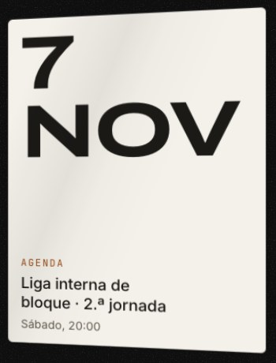

ShoesPhotoTile| Props nuevas | brand y model. Las pasan los 7 usos actuales: ShoesCard, ShoesGlanceTable, ShoesGlanceCards, ShoesCompareTable, ShoesCompareByAttribute, ShoesCompareTray y ShoesDetailDrawer. |
|---|---|
| Líneas | Una palabra por línea, como «7 / NOV». Con más de 3 palabras se une el par contiguo más corto hasta quedar en 3. |
| Tamaño | min(31cqw, 89cqw / n, 58cqh / l). n es el ancho en em de la línea más ancha, calculado con la tabla de anchos de Archivo que está en el script de este archivo; l es el número de líneas. 31cqw es el tamaño del «7 NOV». Contar letras no sirve: MOMENTUM y DRAGO se cortaban. |
| Posición | Abajo a la izquierda por defecto. Arriba, como el hero, solo en la placa de la home, donde no hay controles encima. |
| Pequeña | Menos de 120 px: sin marca. Si además n ≥ 7, dos iniciales como máximo. |
| Hover | Fondo tray-hover en 200 ms y nombre a scale(1.02) en 600 ms, igual que la foto. Sin movimiento con prefers-reduced-motion. |
| Accesibilidad | Decorativa, como hoy: aria-hidden. El nombre accesible lo lleva el enlace de al lado. Tinta sobre tray: 14,6:1; marca: 5,92:1. |
| Se retira | public/images/shoe-placeholder.png, cuando ya no la use ningún componente. |